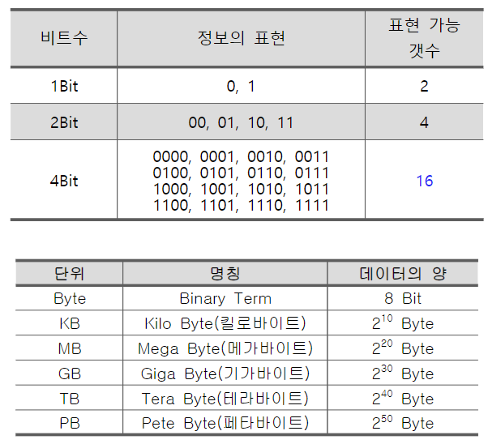
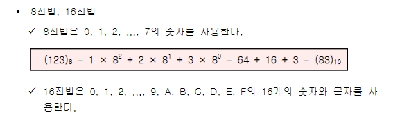
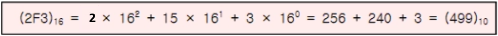
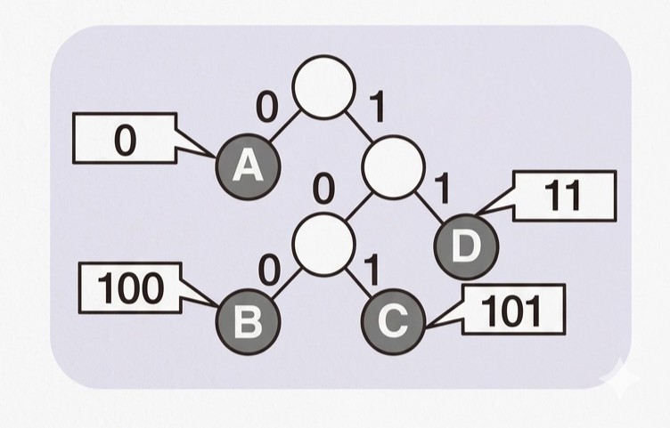

[5차시] 디지털 데이터의 압축
01 비트와 바이트


02 십진법 vs 이진법 vs 팔진법 vs 십육진법





03 반복 길이 압축 vs 허프만 압축

| 구분 | 반복 길이 압축 (Run-Length Encoding) | 허프만 압축 (Huffman Coding) |
| 핵심 원리 | 연속되는 동일한 데이터의 개수를 세어서 기록 (중복성 제거) | 출현 빈도에 따라 가변 길이 부호를 할당 (통계적 압축) |
| 장점 | 구현이 매우 단순하고 빠름, 연속 데이터가 많을 때 효율 극대화 | 평균적인 압축률이 우수하며, 대부분의 데이터에 효과적임 |
| 단점 | 데이터가 자주 바뀌면 오히려 크기가 늘어날 수 있음 | 압축 전 빈도 분석이 필요하며, 해독을 위한 '표(Tree)'가 필요함 |
| 주요 용도 | 단순한 아이콘, 팩스, BMP 이미지, 마인크래프트 맵 데이터 | 압축 파일(ZIP), JPEG, MP3, 텍스트 문서 |
04 허프만 (압축을 위한) 트리 구조 AAABAACDD → 000100001011111


📊 JPG vs PNG vs GIF
| 구분 | JPG (JPEG) | PNG | GIF |
| 압축 방식 | 손실 압축 (용량 작음) | 무손실 압축 (용량 큼) | 무손실 압축 (용량 작음) |
| 투명도 지원 | 지원 안 함 (배경 흰색) | 지원함 (투명 배경) | 지원함 (투명도 조절 불가) |
| 색상 표현 | 1,600만 색 (풍부함) | 1,600만 색 (정교함) | 256색 (제한적) |
| 애니메이션 | 지원 안 함 | 지원 안 함 (APNG 예외) | 지원함 (움직이는 짤) |
| 주요 용도 | 사진, 복잡한 풍경 이미지 | 로고, 아이콘, 스크린샷 | 간단한 로고, 짧은 움짤 |
🔍 각 이미지 포맷별 특징
1. JPG (Joint Photographic Experts Group)
- 특징: 사진처럼 색상이 다양하고 복잡한 이미지에 최적화됨. 압축률을 높이면 용량은 획기적으로 줄어들지만, 이미지 품질이 눈에 띄게 떨어지는 '손실 압축' 방식
- 주의: 텍스트가 포함된 이미지나 로고에 사용하면 글자 주변에 노이즈(지저분한 입자)가 생길 수 있음.
2. PNG (Portable Network Graphics)
- 특징: 배경을 투명하게 처리할 수 있는 것이 가장 큰 장점임. 무손실 압축을 사용하므로 원본의 선명함을 그대로 유지함.
- 주의: JPG에 비해 파일 용량이 크기 때문에 웹사이트 로딩 속도에 영향을 줄 수 있음.
3. GIF (Graphics Interchange Format)
- 특징: 짧은 애니메이션(움짤)을 만드는 데 독보적임. 256가지 색상만 사용하기 때문에 데이터 크기가 작음.
- 주의: 색상 표현이 제한적이어서 사진을 GIF로 만들면 화질이 거칠게 느껴질 수 있음.
💡 한 줄 가이드
1. 실제 카메라로 찍은 풍경이나 인물 사진이라면? JPG
2. 배경이 투명해야 하거나 선명한 로고/스크린샷이라면? PNG
3. 움직이는 짧은 영상이나 아주 단순한 아이콘이라면? GIF